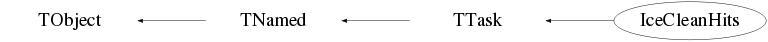

class IceCleanHits: public TTask
Class IceCleanHits TTask derived class to perform hit cleaning. In case an event has been rejected by an NcEventSelector (based) processor, this task (and its sub-tasks) is not executed. Criteria applied for Amanda MuDaq data : 1) ADC within [min,max] Default : [0.3,999999] PE 2) TOT within [min,max] Default : electrical [125,2000] optical [20,2000] ns 3) abs(LE-Ttrig)<=win Default : win=2250 TDC counts where : LE=uncalibrated hit LE (i.e. TDC counts) Ttrig=selected trigger time in TDC counts 4) At least one hit in another OM within radius R and time difference dt to remove isolated hits. Defaults : R=70 m dt=500 ns Criteria applied for Amanda TWRDaq data : 1) ADC within [min,max] Default : [0.3,999999] PE 2) TOT within [min,max] Default : electrical [125,2000] optical [20,2000] ns 3) abs(LE-Ttrig)<=win Default : win=3000 ns where : LE=uncalibrated hit LE Ttrig=selected trigger time 4) At least one hit in another OM within radius R and time difference dt to remove isolated hits. Defaults : R=70 m dt=500 ns Criteria applied for standard IceCube InIce DOM data : 1) ADC within [min,max] Default : [0,999999] PE 2) TOT within [min,max] Default : [0,999999] ns 3) abs(LE-Ttrig)<=win Default : win=3000 ns where : LE=hit LE Ttrig=selected trigger time(s) 4) At least one hit in another DOM within radius R and time difference dt to remove isolated hits. Defaults : R=150 m dt=1000 ns Criteria applied for DeepCore DOM data : 1) ADC within [min,max] Default : [0,999999] PE 2) TOT within [min,max] Default : [0,999999] ns 3) abs(LE-Ttrig)<=win Default : win=1000 ns where : LE=hit LE Ttrig=selected trigger time(s) 4) At least one hit in another DOM within radius R and time difference dt to remove isolated hits. Defaults : R=75 m dt=500 ns Criteria applied for IceTop DOM data : 1) ADC within [min,max] Default : [0,999999] PE 2) TOT within [min,max] Default : [0,999999] ns 3) abs(LE-Ttrig)<=win Default : win=999999 ns where : LE=hit LE Ttrig=selected trigger time(s) 4) At least one hit in another DOM within radius R and time difference dt to remove isolated hits. Defaults : R=150 m dt=1000 ns For AMANDA data the actual DAQ system is obtained automatically from the IceEvent structure via the device called "Daq". The defaults of the various parameters can be changed by the corresponding Set memberfunctions. Information about the actual parameter settings can be found in the event structure itself via the device named "IceCleanHits". Concerning the trigger time : The user can impose a specific trigger name or time to be used by invokation of the memberfunctions SetTname or SetTtime, respectively. The (uncalibrated) LE of a specified (by name) trigger pulse is used as obtained from the IceEvent structure (via the GetTriggerTime facility). Specification of a negative trigger time will result in the automatic trigger time setting corresponding to the median of recorded hit times or determination of multiple trigger times based on a spectral analysis of the observed hit times. In case of automatic trigger time selection, only non-isolated HLC hits will be used to determine the trigger time(s). For further details please refer to the docs of the memberfunctions SetTname and SetTtime. The hits which do not fullfill the criteria are flagged "dead" for the corresponding signal slot. This means they are still present in the IceEvent structure and are as such still accessible. It is left to the user to decide (based on the various "dead" flag settings) whether or not to use these hits in his/her reconstruction or analysis. Note : This processor only works properly on Time and ADC calibrated data. --- Author: Nick van Eijndhoven 13-oct-2005 Utrecht University - Modified: NvE $Date: 2012-02-07 11:05:54 +0100 (Tue, 07 Feb 2012) $ NCFS
Function Members (Methods)
public:
| IceCleanHits(const IceCleanHits&) | |
| IceCleanHits(const char* name = "IceCleanHits", const char* title = "Hit cleaning") | |
| virtual | ~IceCleanHits() |
| virtual void | TTask::Abort()MENU |
| void | TObject::AbstractMethod(const char* method) const |
| virtual void | TTask::Add(TTask* task) |
| virtual void | TObject::AppendPad(Option_t* option = "") |
| virtual void | TTask::Browse(TBrowser* b) |
| static TClass* | Class() |
| virtual const char* | TObject::ClassName() const |
| virtual void | TTask::CleanTasks() |
| virtual void | TTask::Clear(Option_t* option = "") |
| virtual TObject* | TNamed::Clone(const char* newname = "") const |
| virtual Int_t | TNamed::Compare(const TObject* obj) const |
| virtual void | TTask::Continue()MENU |
| virtual void | TNamed::Copy(TObject& named) const |
| virtual void | TObject::Delete(Option_t* option = "")MENU |
| virtual Int_t | TObject::DistancetoPrimitive(Int_t px, Int_t py) |
| virtual void | TObject::Draw(Option_t* option = "") |
| virtual void | TObject::DrawClass() constMENU |
| virtual TObject* | TObject::DrawClone(Option_t* option = "") constMENU |
| virtual void | TObject::Dump() constMENU |
| virtual void | TObject::Error(const char* method, const char* msgfmt) const |
| virtual void | Exec(Option_t* opt) |
| virtual void | TObject::Execute(const char* method, const char* params, Int_t* error = 0) |
| virtual void | TObject::Execute(TMethod* method, TObjArray* params, Int_t* error = 0) |
| virtual void | TObject::ExecuteEvent(Int_t event, Int_t px, Int_t py) |
| virtual void | TTask::ExecuteTask(Option_t* option = "0")MENU |
| virtual void | TTask::ExecuteTasks(Option_t* option) |
| virtual void | TObject::Fatal(const char* method, const char* msgfmt) const |
| virtual void | TNamed::FillBuffer(char*& buffer) |
| virtual TObject* | TObject::FindObject(const char* name) const |
| virtual TObject* | TObject::FindObject(const TObject* obj) const |
| Int_t | TTask::GetBreakin() const |
| Int_t | TTask::GetBreakout() const |
| virtual Option_t* | TObject::GetDrawOption() const |
| static Long_t | TObject::GetDtorOnly() |
| virtual const char* | TObject::GetIconName() const |
| TList* | TTask::GetListOfTasks() const |
| virtual const char* | TNamed::GetName() const |
| virtual char* | TObject::GetObjectInfo(Int_t px, Int_t py) const |
| static Bool_t | TObject::GetObjectStat() |
| virtual Option_t* | TObject::GetOption() const |
| virtual const char* | TNamed::GetTitle() const |
| virtual UInt_t | TObject::GetUniqueID() const |
| virtual Bool_t | TObject::HandleTimer(TTimer* timer) |
| virtual ULong_t | TNamed::Hash() const |
| virtual void | TObject::Info(const char* method, const char* msgfmt) const |
| virtual Bool_t | TObject::InheritsFrom(const char* classname) const |
| virtual Bool_t | TObject::InheritsFrom(const TClass* cl) const |
| virtual void | TObject::Inspect() constMENU |
| void | TObject::InvertBit(UInt_t f) |
| virtual TClass* | IsA() const |
| Bool_t | TTask::IsActive() const |
| virtual Bool_t | TObject::IsEqual(const TObject* obj) const |
| virtual Bool_t | TTask::IsFolder() const |
| Bool_t | TObject::IsOnHeap() const |
| virtual Bool_t | TNamed::IsSortable() const |
| Bool_t | TObject::IsZombie() const |
| virtual void | TTask::ls(Option_t* option = "*") constMENU |
| void | TObject::MayNotUse(const char* method) const |
| virtual Bool_t | TObject::Notify() |
| void | TObject::Obsolete(const char* method, const char* asOfVers, const char* removedFromVers) const |
| static void | TObject::operator delete(void* ptr) |
| static void | TObject::operator delete(void* ptr, void* vp) |
| static void | TObject::operator delete[](void* ptr) |
| static void | TObject::operator delete[](void* ptr, void* vp) |
| void* | TObject::operator new(size_t sz) |
| void* | TObject::operator new(size_t sz, void* vp) |
| void* | TObject::operator new[](size_t sz) |
| void* | TObject::operator new[](size_t sz, void* vp) |
| IceCleanHits& | operator=(const IceCleanHits&) |
| virtual void | TObject::Paint(Option_t* option = "") |
| virtual void | TObject::Pop() |
| virtual void | TNamed::Print(Option_t* option = "") const |
| virtual Int_t | TObject::Read(const char* name) |
| virtual void | TObject::RecursiveRemove(TObject* obj) |
| void | TObject::ResetBit(UInt_t f) |
| virtual void | TObject::SaveAs(const char* filename = "", Option_t* option = "") constMENU |
| virtual void | TObject::SavePrimitive(ostream& out, Option_t* option = "") |
| void | TTask::SetActive(Bool_t active = kTRUE)TOGGLE |
| void | SetAdcRange(Float_t min, Float_t max, TString s) |
| void | TObject::SetBit(UInt_t f) |
| void | TObject::SetBit(UInt_t f, Bool_t set) |
| void | TTask::SetBreakin(Int_t breakin = 1)TOGGLE |
| void | TTask::SetBreakout(Int_t breakout = 1)TOGGLE |
| virtual void | TObject::SetDrawOption(Option_t* option = "")MENU |
| static void | TObject::SetDtorOnly(void* obj) |
| void | SetIsolation(Float_t rmax, Float_t dtmax, TString s) |
| virtual void | TNamed::SetName(const char* name)MENU |
| virtual void | TNamed::SetNameTitle(const char* name, const char* title) |
| static void | TObject::SetObjectStat(Bool_t stat) |
| virtual void | TNamed::SetTitle(const char* title = "")MENU |
| void | SetTname(TString name, TString s) |
| void | SetTotRange(Float_t min, Float_t max, TString s) |
| void | SetTtime(Float_t t, TString s, Int_t slc = 0, Int_t mult = 0) |
| void | SetTwindow(Float_t dtmax, TString s) |
| virtual void | TObject::SetUniqueID(UInt_t uid) |
| virtual void | ShowMembers(TMemberInspector&) |
| virtual Int_t | TNamed::Sizeof() const |
| virtual void | Streamer(TBuffer&) |
| void | StreamerNVirtual(TBuffer& ClassDef_StreamerNVirtual_b) |
| virtual void | TObject::SysError(const char* method, const char* msgfmt) const |
| Bool_t | TObject::TestBit(UInt_t f) const |
| Int_t | TObject::TestBits(UInt_t f) const |
| virtual void | TObject::UseCurrentStyle() |
| virtual void | TObject::Warning(const char* method, const char* msgfmt) const |
| virtual Int_t | TObject::Write(const char* name = 0, Int_t option = 0, Int_t bufsize = 0) |
| virtual Int_t | TObject::Write(const char* name = 0, Int_t option = 0, Int_t bufsize = 0) const |
protected:
| void | Amanda() |
| void | Amplitude(TObjArray& hits, Float_t adcmin, Float_t adcmax, Float_t totmin, Float_t totmax) const |
| void | DCdoms() |
| virtual void | TObject::DoError(int level, const char* location, const char* fmt, va_list va) const |
| void | ICdoms() |
| void | IceTop() |
| void | Isolation(TObjArray& hits, Float_t dtmax, Float_t rmax) const |
| void | TObject::MakeZombie() |
| void | MuDaq() |
| void | TimeWindow(TObjArray& hits, Float_t ttrig, Float_t twin, TArrayF* peaks = 0) const |
| void | TWRDaq() |
Data Members
public:
| enum TObject::EStatusBits { | kCanDelete | |
| kMustCleanup | ||
| kObjInCanvas | ||
| kIsReferenced | ||
| kHasUUID | ||
| kCannotPick | ||
| kNoContextMenu | ||
| kInvalidObject | ||
| }; | ||
| enum TObject::[unnamed] { | kIsOnHeap | |
| kNotDeleted | ||
| kZombie | ||
| kBitMask | ||
| kSingleKey | ||
| kOverwrite | ||
| kWriteDelete | ||
| }; |
protected:
| Bool_t | TTask::fActive | true if task is active |
| Float_t | fAdcmaxAM | Maximum Amanda MuDaq ADC value in PE |
| Float_t | fAdcmaxAT | Maximum Amanda TWRDaq ADC value in PE |
| Float_t | fAdcmaxDC | Maximum DeepCore ADC value in PE |
| Float_t | fAdcmaxIC | Maximum standard IceCube InIce ADC value in PE |
| Float_t | fAdcmaxT | Maximum IceTop ADC value in PE |
| Float_t | fAdcminAM | Minimum Amanda MuDaq ADC value in PE |
| Float_t | fAdcminAT | Minimum Amanda TWRDaq ADC value in PE |
| Float_t | fAdcminDC | Minimum DeepCore ADC value in PE |
| Float_t | fAdcminIC | Minimum standard IceCube InIce ADC value in PE |
| Float_t | fAdcminT | Minimum IceTop ADC value in PE |
| Int_t | TTask::fBreakin | =1 if a break point set at task extry |
| Int_t | TTask::fBreakout | =1 if a break point set at task exit |
| Float_t | fDtmaxA | Maximum Amanda hit isolation dt in ns |
| Float_t | fDtmaxDC | Maximum DeepCore hit isolation dt in ns |
| Float_t | fDtmaxIC | Maximum standard IceCube InIce hit isolation dt in ns |
| Float_t | fDtmaxT | Maximum IceTop hit isolation dt in ns |
| IceEvent* | fEvt | Pointer to the current event structure |
| Bool_t | TTask::fHasExecuted | True if task has executed |
| Int_t | fMultDC | Flag to allow multiple trigger times from DeepCore hits |
| Int_t | fMultIC | Flag to allow multiple trigger times from standard InIce hits |
| Int_t | fMultT | Flag to allow multiple trigger times from IceTop hits |
| TString | TNamed::fName | object identifier |
| TString | TTask::fOption | Option specified in ExecuteTask |
| Float_t | fRmaxA | Maximum Amanda hit isolation radius in m |
| Float_t | fRmaxDC | Maximum DeepCore hit isolation radius in m |
| Float_t | fRmaxIC | Maximum standard IceCube InIce hit isolation radius in m |
| Float_t | fRmaxT | Maximum IceTop hit isolation radius in m |
| Int_t | fSlcDC | Usage flag for SLC hits of DeepCore DOMs to determine the trigger time |
| Int_t | fSlcIC | Usage flag for SLC hits of standard InIce DOMs to determine the trigger time |
| Int_t | fSlcT | Usage flag for SLC hits of IceTop DOMs to determine the trigger time |
| TList* | TTask::fTasks | List of Tasks |
| TString | TNamed::fTitle | object title |
| TString | fTnamAM | The Amanda MuDaq trigger name |
| TString | fTnamAT | The Amanda TWRDaq trigger name |
| TString | fTnamDC | The IceCube trigger name for DeepCore DOM cleaning |
| TString | fTnamIC | The IceCube trigger name for standard InIce DOM cleaning |
| TString | fTnamT | The IceCube trigger name for IceTop cleaning |
| Float_t | fTotmaxAEM | Maximum Amanda MuDaq electrical TOT value in ns |
| Float_t | fTotmaxAET | Maximum Amanda TWRDaq electrical TOT value in ns |
| Float_t | fTotmaxAOM | Maximum Amanda MuDaq optical TOT value in ns |
| Float_t | fTotmaxAOT | Maximum Amanda TWRDaq optical TOT value in ns |
| Float_t | fTotmaxDC | Maximum DeepCore TOT value in ns |
| Float_t | fTotmaxIC | Maximum standard IceCube InIce TOT value in ns |
| Float_t | fTotmaxT | Maximum IceTop TOT value in ns |
| Float_t | fTotminAEM | Minimum Amanda MuDaq electrical TOT value in ns |
| Float_t | fTotminAET | Minimum Amanda TWRDaq electrical TOT value in ns |
| Float_t | fTotminAOM | Minimum Amanda MuDaq optical TOT value in ns |
| Float_t | fTotminAOT | Minimum Amanda TWRDaq optical TOT value in ns |
| Float_t | fTotminDC | Minimum DeepCore TOT value in ns |
| Float_t | fTotminIC | Minimum standard IceCube InIce TOT value in ns |
| Float_t | fTotminT | Minimum IceTop TOT value in ns |
| Float_t | fTtimAM | The Amanda MuDaq trigger time in TDC counts |
| Float_t | fTtimAT | The Amanda TWRDaq trigger time in ns |
| Float_t | fTtimDC | The (median) trigger time in ns for DeepCore DOM hits |
| Float_t | fTtimIC | The (median) trigger time in ns for standard InIce DOM hits |
| Float_t | fTtimT | The (median) trigger time in ns for IceTop DOM hits |
| Float_t | fTwinAM | Maximum Amanda MuDaq hit time difference from the trigger time in TDC counts |
| Float_t | fTwinAT | Maximum Amanda TWRDaq hit time difference from the trigger time in ns |
| Float_t | fTwinDC | Maximum DeepCore hit time difference from the trigger time in ns |
| Float_t | fTwinIC | Maximum standard InIce hit time difference from the trigger time in ns |
| Float_t | fTwinT | Maximum IceTop hit time difference from the trigger time in ns |
| static TTask* | TTask::fgBeginTask | pointer to task initiator |
| static TTask* | TTask::fgBreakPoint | pointer to current break point |
Class Charts
{kind=link}
{kind=link}
{kind=link}
{kind=link}

Function documentation
IceCleanHits(const char* name = "IceCleanHits", const char* title = "Hit cleaning")
Default constructor.
void SetAdcRange(Float_t min, Float_t max, TString s)
void SetTotRange(Float_t min, Float_t max, TString s)
Set TOT range in ns. The argument "s" specifies the sensor system as follows : s = "AEM" ==> Amanda modules with electrical readout under the MuDaq system "AOM" ==> Amanda modules with optical fibre readout under the MuDaq system "AET" ==> Amanda modules with electrical readout under the TWRDaq system "AOT" ==> Amanda modules with optical fibre readout under the TWRDaq system "TDOM ==> IceTop DOMs "ICDOM" ==> Standard IceCube InIce DOMs "DCDOM" ==> DeepCore DOMs
void SetIsolation(Float_t rmax, Float_t dtmax, TString s)
Set maximum hit isolation radius (in m) and time difference (in ns). The argument "s" specifies the sensor system as follows : s = "AOM" ==> Amanda modules "TDOM ==> IceTop DOMs "ICDOM" ==> Standard IceCube InIce DOMs "DCDOM" ==> DeepCore DOMs Note : In case one of the arguments "rmax" or "dtmax" is negative, the corresponding value will not be modified.
void SetTwindow(Float_t dtmax, TString s)
Set the maximal time window around the trigger time. Only hits which occur in [T-dtmax,T+dtmax] will be kept, where T indicates the trigger time. For the Amanda MuDaq hardware, the times are all in TDC counts, where 1 TDC corresponds to about 1.04 ns. For all other systems the times are all in nanoseconds. The argument "s" specifies the sensor system as follows : s = "MuDaq" ==> Amanda modules under the MuDaq system "TWRDaq" ==> Amanda modules under the TWRDaq system "TDOM" ==> IceTop DOMs "ICDOM" ==> Standard IceCube InIce DOMs "DCDOM" ==> DeepCore DOMs
void SetTname(TString name, TString s)
Specify the trigger name to be used to derive the trigger time for the time cleaning of a certain class of sensors. Note : Specification of name="Average" will result in a trigger time being the "median" of all encountered non-zero trigger times. The argument "s" specifies the sensor system as follows : s = "MuDaq" ==> Amanda modules under the MuDaq system "TWRDaq" ==> Amanda modules under the TWRDaq system "TDOM" ==> IceTop DOMs "ICDOM" ==> Standard IceCube InIce DOMs "DCDOM" ==> DeepCore DOMs Specification of a non-existing trigger name will result in a trigger time value of 0. The used trigger time value will be stored in the corresponding slot of the "IceCleanHits" device in the event structure. Note : The user can also impose a certain trigger time without using any trigger information. This is achieved by invoking the memberfunction SetTtime.
void SetTtime(Float_t t, TString s, Int_t slc = 0, Int_t mult = 0)
Set the trigger time(s) for a certain class of sensors. For the Amanda MuDaq hardware, the times are all in TDC counts, where 1 TDC corresponds to about 1.04 ns. For the other systems the times are all in nanoseconds. The argument "s" specifies the sensor system as follows : s = "MuDaq" ==> Amanda modules under the MuDaq system "TWRDaq" ==> Amanda modules under the TWRDaq system "TDOM" ==> IceTop DOMs "ICDOM" ==> Standard IceCube InIce DOMs "DCDOM" ==> DeepCore DOMs A negative value will induce automatic trigger time(s) setting. In case of automatic trigger time determination, the "median" of the hit times of the specified class of sensors, as recorded in the IceEvent structure, is calculated. Via the argument "slc" the user can select to use (1) or not use (0) SLC hits in the automatic trigger time determination for the specified class of sensors. This "median" value will then be stored (as a negative value) in the corresponding slot of the "IceCleanHits" device in the event structure. The argument "mult" allows to select (1) or not select (0) a spectral analysis of the hit time distributions of the corresponding class of sensors. In this analysis various peaks in the hit time distribution will be identified with different trigger times. Each identified peak will be treated as an individual trigger time with the corresponding time window around it. This will allow to cope with coincident tracks in the detector. In case no peaks are found, the "median" trigger time as mentioned above will be used. For a user selected trigger time, this trigger time will be stored in the corresponding slot of the "IceCleanHits" device in the event structure. The default values are : slc=0 and mult=1. Notes : 1) The arguments "slc" and "mult" are only used for IceCube hits, not for Amanda. 2) In the constructor of this class the defaults have been set to always perform automatic trigger time determination with slc=0 and mult=1.
void Amplitude(TObjArray& hits, Float_t adcmin, Float_t adcmax, Float_t totmin, Float_t totmax) const
Perform hit cleaning based on amplitude (ADC) and duration (TOT).
void Isolation(TObjArray& hits, Float_t dtmax, Float_t rmax) const
Perform hit cleaning based on isolation criteria. Only retain hits that have at least one hit of another OM within a certain radius and within a certain time window
void TimeWindow(TObjArray& hits, Float_t ttrig, Float_t twin, TArrayF* peaks = 0) const
Perform hit cleaning based on a time window around a trigger time.
IceCleanHits(const char* name = "IceCleanHits", const char* title = "Hit cleaning")